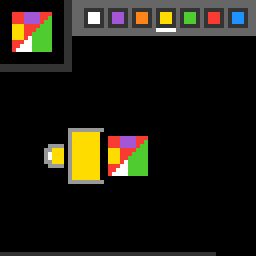

cd82
Turn a cup around a container and pour colours until the container matches the target picture.
6 levels · 11 rules · all levels replayed in Lean
Replay
The certified run that cleared every level, one action at a time.

Press Play or step to load the run. Keys, while the player is on screen: ← → step, Space play / pause. A click is circled; cells that changed are outlined.
How it plays
The small picture at the top left is the target, and the square container in the middle is to be painted to look like it. At the top right is the palette; click a block and the cup changes to that colour. The large cup turns around the container among eight positions; a direction key makes it turn one cell toward the side pressed, with the cup mouth always facing the container; when the direction pressed is not suitable, this key does nothing. Press "pour", and the container is cut into two halves by a line through the centre perpendicular to the direction of the cup mouth, and the half nearer the cup is painted whole in the colour in the cup; a later pour covers an earlier one. Shapes that one cut cannot produce are left to the small cup: the small cup appears only when the large cup is exactly east, south, west or north; click its grey edge, and a strip of colour is laid over the container's edge nearest to it. When the container equals the target picture cell by cell, the level is cleared. The budget bar at the very bottom shortens bit by bit with the steps, and when it shrinks to the end the game is over; colours not on the palette cannot be painted.

Model
The final model: 7 object types and 11 rules. Each rule is a Python check against every recorded step; 10 of them are translated into Lean (the paper's per-game table). Code under a rule is the file of the same name in the agent's Lean project.
Object types
- Target picture
targetThe small picture at top left that the container must match.Lean · Target.lean
-- Board.target : Target abbrev Target := Vessel - Palette
paletteThe row of colour blocks at top right; clicking one picks that colour.Lean · Swatch.lean
-- Board.palette : List Swatch structure Swatch where box : Box color : Nat deriving DecidableEq, Repr - Container
vesselThe square canvas in the middle and the current colour of each cell.Lean · Vessel.lean
-- St.vessel : Vessel abbrev Vessel := Nat → Nat → Nat - Cup position
poseWhich of eight positions around the container the large cup occupies, mouth facing in.Lean · Cup.lean
-- St.pose : Pose abbrev Pose := Nat - Current colour
paintThe colour in the cup, marked by a short line under the palette.Lean · Paint.lean
-- St.paint : Color abbrev Color := Nat - Small cup
spoutWhether the small cup is present right now.Lean · World.lean
-- Seen.spout : Bool structure Seen where vessel : List Nat pose : Nat paint : Nat spout : Bool bar : Nat deriving DecidableEq, Repr - Budget bar
budgetThe bottom row; it shortens each step and the game ends when it runs out.Lean · Budget.lean
namespace Game def FULL : Nat := 64 end Game
Rules
turnA direction key turns the large cup one cell around the container, or does nothing.Python
from __future__ import annotations from derive.turn import turned from .._scope import within_level … HISTORY = [ … … … … ] SOURCES = ["keys_are_screen_dirs", "orbit_turn_rule", "key_dead_by_open_angle", "rot_apply", "rot8_apply", "cup_frozen_within_tilt", "a12_only_cup"] def scope_(w, action, _nw, ctx): return within_level(action, ctx) def assert_(w, action, nw, ctx): return nw.pose == turned(w.pose, action)Lean · Turn.lean
import Obj.World namespace Game def turn (p k : Nat) : Nat := if (p + 12 - k) % 8 == 5 || (p + 12 - k) % 8 == 6 then (p + 1) % 8 else if (p + 12 - k) % 8 == 2 || (p + 12 - k) % 8 == 3 then (p + 7) % 8 else p def turnBy (p : Pose) : Act → Pose | .up => turn p 2 | .down => turn p 6 | .left => turn p 4 | .right => turn p 0 | _ => p end Gamepick_paintClicking a palette block fills the cup with that colour; nothing else changes the colour.Python
from __future__ import annotations from derive.click import what from .._scope import within_level … HISTORY = [ … … … ] SOURCES = ["a6_swatch_sets_paint", "underline_relocates_on_recolor", "a6_dead_outside_swatches"] def scope_(w, action, _nw, ctx): return within_level(action, ctx) def assert_(w, action, nw, ctx): kind, s = what(w, action) if kind == "swatch": return nw.paint == s.color return nw.paint == w.paintLean · PickPaint.lean
import Obj.World namespace Game def pickPaint (b : Board) (p : Color) (r c : Nat) : Color := match swatchHit b.palette r c with | some sw => sw.color | none => p end GamepourPour paints the container half nearer the cup, centre line included, in the current colour.Python
from __future__ import annotations from derive.pour import poured from .._scope import within_level … HISTORY = [ … … … ] SOURCES = ["a5_paints_cup_side", "a5_fill_halfplane", "a5_pours_into_vessel"] def scope_(w, action, _nw, ctx): if not action.startswith("ACTION5"): … return within_level(action, ctx) def assert_(w, action, nw, ctx): return nw.vessel == poured(w)Lean · Pour.lean
import Obj.World namespace Game def inHalf : Nat → Nat → Nat → Bool | 0, _, c => decide (c ≤ 4) | 1, r, c => decide (c ≤ r) | 2, r, _ => decide (5 ≤ r) | 3, r, c => decide (9 ≤ r + c) | 4, _, c => decide (5 ≤ c) | 5, r, c => decide (r ≤ c) | 6, r, _ => decide (r ≤ 4) | 7, r, c => decide (r + c ≤ 9) | _, _, _ => false def pour (s : St) : Vessel := fun r c => if inHalf s.pose r c then s.paint else s.vessel r c end Gamespout_followsThe small cup appears only when the large cup is east, south, west or north.Python
from __future__ import annotations from derive.turn import turned from objects.stage.cup import START, cardinal from .._scope import WHY_LEVEL, WHY_NEWGAME, WHY_OVER … … … HISTORY = [ … … … ] SOURCES = ["secondcup_only_cardinal", "secondcup_at_level2_cardinals", "secondcup_returns_where"] … def scope_(w, action, _nw, ctx): mark = (ctx or {}).get("mark", "") … return WHY_LEVEL … return WHY_NEWGAME … return WHY_OVER goes_to = START if action.startswith("RESET") else turned(w.pose, action) if not cardinal(w.pose) and cardinal(goes_to): return WHY_UNREADABLE return None def assert_(w, action, nw, ctx): return nw.spout == (cardinal(nw.pose) and w.spout)Lean · SpoutFollows.lean
import Obj.World namespace Game def spoutOn (b : Board) (p : Pose) : Bool := b.hasSpout && cardinal p end GamestampClicking the small cup's grey edge paints a strip on the nearest container edge.Python
from __future__ import annotations from derive.click import what from derive.stamp import stamped from .._scope import within_level … HISTORY = [ … … ] SOURCES = ["a6_spout_rim_stamps"] def scope_(w, action, _nw, ctx): kind, _ = what(w, action) if kind != "rim": … return within_level(action, ctx) def assert_(w, action, nw, ctx): return nw.vessel == stamped(w)Lean · Stamp.lean
import Obj.World import Rule.Move.SpoutFollows namespace Game def inBand : Nat → Nat → Nat → Bool | 6, r, c => decide (r ≤ 2 ∧ 3 ≤ c ∧ c ≤ 6) | 0, r, c => decide (c ≤ 2 ∧ 3 ≤ r ∧ r ≤ 6) | 2, r, c => decide (7 ≤ r ∧ 3 ≤ c ∧ c ≤ 6) | 4, r, c => decide (7 ≤ c ∧ 3 ≤ r ∧ r ≤ 6) | _, _, _ => false def stampHit (b : Board) (s : St) (r c : Nat) : Bool := spoutOn b s.pose && rimHit s.pose r c def stamp (s : St) : Vessel := fun r c => if inBand s.pose r c then s.paint else s.vessel r c end GamebudgetEvery action, even one that does nothing, shortens the budget bar at a fixed rate.Python
from __future__ import annotations from derive.budget import next_bars from .._scope import within_level … HISTORY = [ … … … ] SOURCES = ["bar_rule", "bar_prefix_shrink"] def scope_(w, action, _nw, ctx): return within_level(action, ctx) def assert_(w, action, nw, ctx): return nw.budget in next_bars(w.budget)Lean · Budget.lean
import Obj.World namespace Game def HORIZON : Nat := 100 def barOf (k : Nat) : Nat := FULL - (2 * FULL * k + HORIZON) / (2 * HORIZON) end Gamevessel_stillOnly pouring and stamping change the container; this follows from the rules above.Python
from __future__ import annotations from derive.click import what from .._scope import within_level … HISTORY = [ … … ] SOURCES = ["vessel_frozen", "a6_dead_outside_swatches", "a12_only_cup"] def scope_(w, action, _nw, ctx): if action.startswith("ACTION5"): … kind, _ = what(w, action) if kind == "rim": … return within_level(action, ctx) def assert_(w, action, nw, ctx): return nw.vessel == w.vesselLean · VesselStill.lean
import Step namespace Game theorem vessel_still_keys (b : Board) (s : St) : (act b s .up).vessel = s.vessel ∧ (act b s .down).vessel = s.vessel ∧ (act b s .left).vessel = s.vessel ∧ (act b s .right).vessel = s.vessel := by simp [act] theorem vessel_still_swatch (b : Board) (s : St) (r c : Nat) (sw : Swatch) (h : swatchHit b.palette r c = some sw) : (act b s (.click r c)).vessel = s.vessel := by simp [act, h] theorem vessel_still_miss (b : Board) (s : St) (r c : Nat) (h1 : swatchHit b.palette r c = none) (h2 : stampHit b s r c = false) : (act b s (.click r c)).vessel = s.vessel := by simp [act, h1, h2] end Gamelevel_upThe level advances exactly when the container matches the target picture cell by cell.Python
from __future__ import annotations from derive.after import after_vessel … … HISTORY = [ … ] SOURCES = ["levelup_needs_target_pic"] def scope_(w, action, _nw, ctx): if action.startswith("RESET"): … mark = (ctx or {}).get("mark", "") … … if ctx is None or ctx.get("level_prev") is None or ctx.get("level_next") is None: … return None def assert_(w, action, nw, ctx): hit = after_vessel(w, action).pic == w.target.pic return hit == (ctx["level_next"] > ctx["level_prev"])Lean · LevelUp.lean
import Obj.World namespace Game def isGoal (b : Board) (s : St) : Bool := Vessel.same s.vessel b.target end Gamegame_overThe game ends exactly on the step when the budget bar runs out.Python
from __future__ import annotations from .._scope import within_level … … SOURCES = ["budget_zero_gameover"] def scope_(w, action, _nw, ctx): why = within_level(action, ctx) if why: return why if ctx is None or ctx.get("state_next") is None: … return None def assert_(w, action, nw, ctx): over = ctx["state_next"] == "GAME_OVER" and ctx.get("state_prev") != "GAME_OVER" emptied = w.budget > 0 and nw.budget == 0 return over == emptiedLean · GameOver.lean
import Rule.Move.Budget namespace Game def overAt (k : Nat) : Bool := barOf k == 0 end Gameback_to_startRestart, clearing or new game sets cup on top, colour purple, container white, budget full.Python
from __future__ import annotations from objects.hud.budget import FULL from objects.stage.cup import START START_PAINT = 15 BLANK = 0 … HISTORY = [ … … … ] SOURCES = ["reset_sets_state", "reset_wipes_stage", "levelup_resets_stage", "levelup_sets_paint"] def scope_(w, action, _nw, ctx): mark = (ctx or {}).get("mark", "") … return None … … … def assert_(w, action, nw, ctx): return (nw.pose == START and nw.paint == START_PAINT and nw.budget == FULL and all(v == BLANK for row in nw.vessel.pic for v in row))Lean · BackToStart.lean
import Obj.World namespace Game def START_PAINT : Color := 15 def start : St := { vessel := fun _ _ => 0, pose := START_POSE, paint := START_PAINT, clock := 0 } end Gameboard_staticWithin a level, the target picture and palette never change, even on restart.Python onlyPython
from __future__ import annotations from .._scope import WHY_LEVEL, WHY_NEWGAME, WHY_OVER … … … HISTORY = [ … … ] SOURCES = ["panel_static", "target_panel_static"] def scope_(w, action, _nw, ctx): mark = (ctx or {}).get("mark", "") … return WHY_LEVEL … return WHY_NEWGAME … return WHY_OVER return None def assert_(w, action, nw, ctx): return nw.target == w.target and nw.palette == w.palette
Code is shown with comments and the agent's notes removed; the files as written are in the archive under Check it yourself.
Proof
For every level, Lean starts from the level's first screen, applies the model's rules to the certified actions, and checks that every computed state agrees with the recorded frame on the components the model represents, and that the last one wins. Each theorem is closed by the Lean kernel and is a statement about the learned model.
Every level can be won
theorem color_control_winnable : Winnable L2_board L2_start := …theorem pair_control_winnable : Winnable L3_board L3_start := …theorem color_not_winnable : ¬ Winnable colorBoard L2_start := …theorem pair_not_winnable : ¬ Winnable pairBoard L3_start := …theorem L0_winnable : Winnable L0_board L0_start := …theorem L1_winnable : Winnable L1_board L1_start := …theorem L2_winnable : Winnable L2_board L2_start := …theorem L3_winnable : Winnable L3_board L3_start := …theorem L4_winnable : Winnable L4_board L4_start := …theorem L5_winnable : Winnable L5_board L5_start := …What cannot be won under the model
theorem colorKey_no_win (b : Board) (hp : ColorPremise b) :
∀ s a, legal a = true → ColorKey b s → step b s a ≠ .won := …theorem unsolvable_by_color (b : Board) (s : St) (hp : ColorPremise b) (h : ColorKey b s) :
Unsolvable b s := …theorem color_unsolvable : Unsolvable colorBoard L2_start := …theorem pairKey_no_win (b : Board) (hp : PairPremise b) :
∀ s a, legal a = true → PairKey s → step b s a ≠ .won := …theorem unsolvable_by_pair (b : Board) (s : St) (hp : PairPremise b) (h : PairKey s) :
Unsolvable b s := …theorem pair_unsolvable : Unsolvable pairBoard L3_start := …Statements only; the proofs and the full Lean project are in the archive, with the steps to re-run them, under Check it yourself.
Check it yourself
Everything on this page comes from files you can download and check. The archive holds the agent's files: the recorded run, the concept book, the concept sources, the Lean project and the sealed model file, plus the record of our kernel check.
Download cd82.zip 1.1 MB · 69 files
Re-run the proof
Before you start: our run of this check took 81 s and 3.8 GB of memory at its peak (2026-10-23).
- Download cd82.zip and unpack it. The model and its theorems are in
archive/cd82-20260912/formal/Game.lean. Before changing it, check that its SHA-256 is35d730265f95fe57097b92d69099e36f9e7b91eed824c0ecd28300fc13c01983 - Install Lean with elan, then the version named in the archive's
lean-toolchain:elan toolchain install leanprover/lean4:v4.34.0 - Copy the model file to
Check.leanand append these two lines to the copy:#print axioms consistent #print axioms faithful - In the folder that holds
Check.lean, run:lean +leanprover/lean4:v4.34.0 -M60000 Check.lean - Lean should finish without errors and print:
'consistent' depends on axioms: [propext] 'faithful' depends on axioms: [propext]
What a pass establishes
consistent: for every recorded transition, as read by the agent's parser and with duplicates removed, every rule whose condition holds also has its effect hold. faithful: the certified run, recomputed step by step from the first screen of each level, matches the record and ends in a win. Axioms used: propext, all among Lean's standard ones.
What it does not establish: that the parser reads the screens correctly (that step runs in Python, outside Lean), or that a rule whose condition never occurs in the record is right. The Python file that produced the readings inside the model file is in the archive at meta/repair-20260928/lib/cd82-20260912/_lib.py.